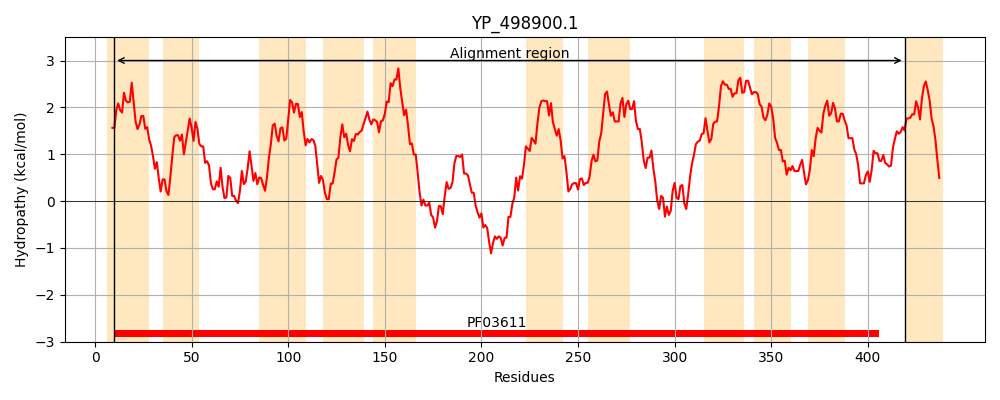
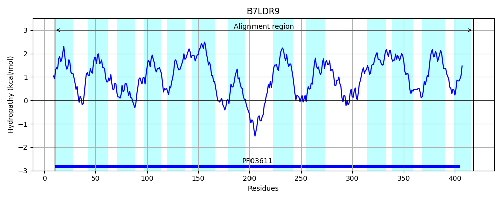
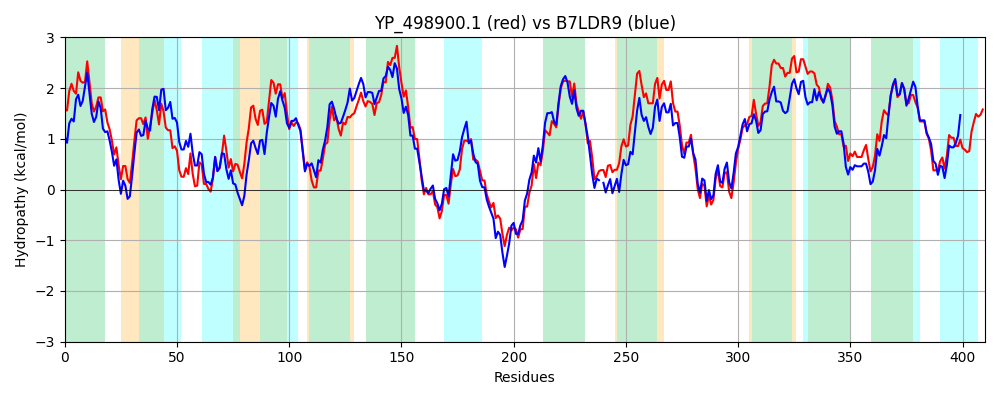

Hit Accession: B7LDR9
Hit TCID: 4.A.7.1.2
Hit Description: gnl|BL_ORD_ID|2034 gnl|TC-DB|B7LDR9|4.A.7.1.2 Putative PTS system, Specific IIC component OS=Escherichia coli (strain 55989 / EAEC) GN=vpeC PE=4 SV=1
Mach Len: 410
e:0.000000
Query TMS Count : 11
Hit TMS Count: 13
TMS-Overlap Score: 9.350000
Predicted Substrates:None
BLAST Alignment:
Score: 1256 , Bit scores: 488 bits, E-value: 6.0e-172, Alignment length: 410, Percentage identity: 58
Query: 10 DILSQPAILVALIAFIGLIVQKKPAATITSGTIKTILGFLILSAGADVVVRSLEPFGKIFQHAFGVQGIVPNNEAIVSLALKDFGTTAALIMVCGMIVNILIARFTNLKYIFLTGHHTFYMAAFLAIILTVSHIKGWLTIVIGALVLGLIMAVLPALLQPTMRKITGNDQVALGHFGSISYFAAGAVGQLFKGKSKSTEEIKFPKGLSFLRESTISISITMALLYFIACLFAGVSYVHESISDGQNFIVFSLIQGVTFAAGVFIILTGVRLILAEIVPAFKGISEKLVPNSKPALDCPIVFPYAQNAVLIGFFVSFITGVIGMFILFLFGGVVILPGVVAHFFLGATAAVFGNARGGIKGAIAGAALNGILITFLPLLFLPFLGELGGAATTFSDTDFLAVGIVFGNAVK 419
D+LS+PA+LV LIA IGLI QKKP GT+KTI+GF+IL AGA +VV SL F IFQHAFG+QG+VPNNEAIVS+A K FG A+IM M++NI+IARFT K+IFLTGHHT +M+ +A+IL + + G I +G+LV+G+ M PA+ P M+K+TG+D VA+GHF ++SY AG +G F K STE++ PK L FLR++ ++IS TM++++ + CLFAG V E +S G+N+ +FS++Q +TFAAGV+IIL GVR+++AEIVPAFKGIS+KLVPN++PALDCP+VFPYA NAVL+GF SF G+IGMF L+L +VI+PGVV HFF+GA A VFGNA GG +GAI GA G+LITFLP+ LP LG++G A TTFSD DF A+GI+ G V+
Sbjct: 10 DVLSEPAVLVGLIALIGLIAQKKPVTECIKGTVKTIMGFVILGAGAGLVVSSLGDFANIFQHAFGIQGVVPNNEAIVSVAQKSFGKEMAMIMFFAMVINIMIARFTPWKFIFLTGHHTLFMSMMVAVILATAGMTGITLIAVGSLVVGVAMVFFPAIAHPYMKKVTGSDDVAIGHFSTLSYVLAGFIGSKFGNKEHSTEDMNVPKSLLFLRDTPVAISFTMSIIFLVTCLFAGADAVKE-LSGGKNWFMFSIMQSITFAAGVYIILQGVRMVIAEIVPAFKGISDKLVPNARPALDCPVVFPYAPNAVLVGFLSSFAAGLIGMFTLYLLNMIVIIPGVVPHFFVGAAAGVFGNATGGRRGAILGAFAQGLLITFLPVFLLPVLGDIGFANTTFSDADFGALGILLGIIVR 418 | Protein Hydropathy Plots: |
|---|
|  |  |
Pairwise Alignment-Hydropathy Plot:
|
|---|
|  |